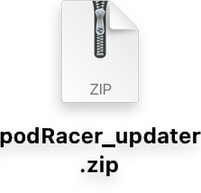
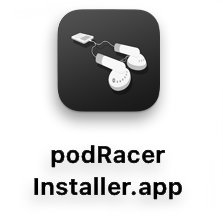
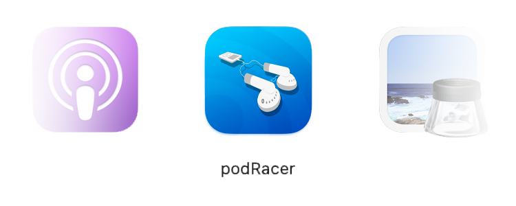

Successful Fetch
Returns podcast information and displays user options
Download the installer from the link below
Download podRacerThe installer is archived in a zip file. You will need to un-pack it first to run the installer. Double-click 'podRacer_installer.zip' to un-pack the installer, then run the installer itself.
podRacer does a handful of 'pre-flight' checks to ensure functionality during installation.
| Pre-Flight Checks:
Once the installer finishes, you will find podRacer within your /Applications directory

Fetch calls is how podRacer communicates with RSS feeds.
Each call sends a request to retrieve feed data, which
is then presented to you with an array of follow-up actions.
To begin, enter the URL of an RSS feed and click 'Fetch'
The application will conduct a quick survey of your environment and will return one of the following results:
Returns podcast information and displays user options
Unable to parse RSS feed, usually due to an invalid URL
Unable to run a fetch call, usually due to a network error
Fetches retrieve and display various data about the podcast on the interface.
| At a glance, podRacer will show you:
List of follow-up actions
This data is further expanded upon using podRacer's built-in data presentation toolset, which includes detailed descriptions of each individual episode.
Upon a successful fetch call, podRacer will present you with a series of options that let's you make various actions.
Downloads podcast episodes in descending order, naming each file after its respective episode.
Files can be found inside the show's directory, inside the 'audio' folder.
By default, podRacer will skip an episode if it already exists.
You can change this behavior by checking 'Overwrite' before clicking download.
When a download is complete, a prompt will apear to direct you to where the podcast was saved.
A brief download report is displayed at the bottom of the UI, showing you what was downloaded.
Choose where you want the podcast saved to.
By default, podcasts are saved within $USER/podRacing
Changing the default location also migrates the reporting data to keep all assets in one convenient location.
Every time you run a fetch call, podRacer produces a detailed report of the podcast you are calling.
These reports, the podcast metadata, include detailed information regarding each individual episode.
These metadata reports are a great way to get an overview of a podcast and its content.
Clicking on episode titles and descriptions automatically copies the text, so you can easily share it elsewhere.
You can learn more about how podRacer creates these reports by reading about its functionality
Searches for the podcast in Apple Podcast and returns the page results.
This is useful if you wish to find the published podcast on a hosted platform.